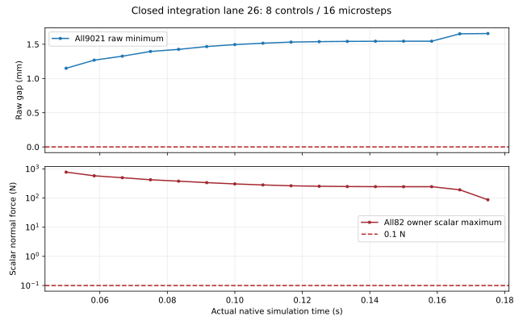

first_scalar_alarm · step 0 / sub 0
实际原生时间 0.05000000260770321 s；原生时钟 6。完整 state／全部相机尝试


返回完整结果 · 状态 026
开发集，8 控制步／16 物理步。不能计作完整安全窗口。
原始几何失败：False；逐点标量力失败：True；前 6 控制步主判据：False。每组所有相机尝试均保留。

下载全部 74 自由度原生 q/qd、实际时钟与逐物理步曲线
实际原生时间 0.05000000260770321 s；原生时钟 6。完整 state／全部相机尝试